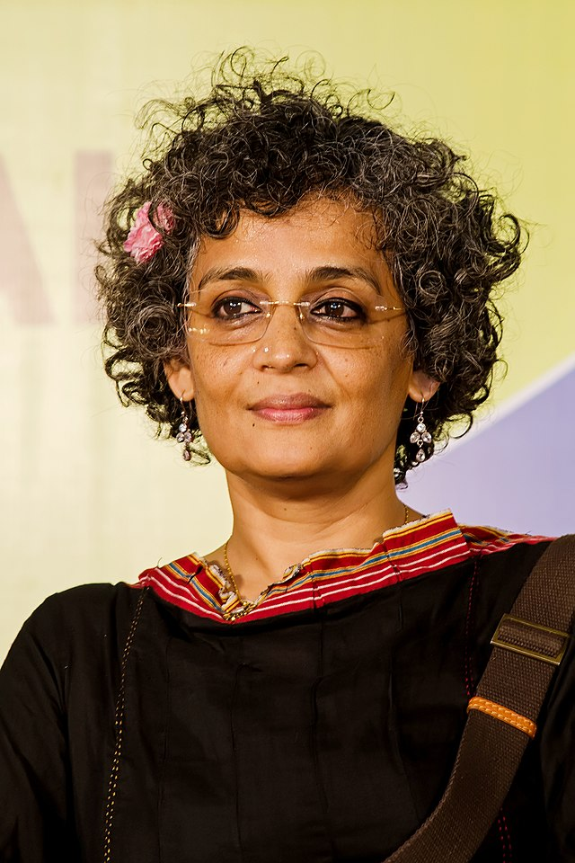
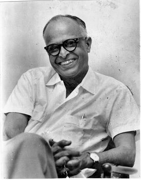

Author Interview's

Arundhati Roy
The Indian Novelist
Interviewer: Ms. Roy, your writing often delves into complex social and political issues. What draws you to these topics?
Arundhati Roy: I believe that literature should engage with the world around us, reflect its complexities, its injustices, and its contradictions.
My writing is a response to the times we live in, a way to understand and challenge the status quo.
Interviewer: Your novel "The God of Small Things" received widespread acclaim. How did you approach writing such a multi-layered
narrative?
Arundhati Roy: "The God of Small Things" emerged from a deeply personal place, rooted in my experiences growing up in Kerala.
I wanted to capture the intricacies of human relationships against the backdrop of a society grappling with caste, politics,
and tradition. It was important for me to weave together the small, intimate moments with the larger socio-political context.
Interviewer: Many of your essays and speeches are known for their bold critique of capitalism and globalization.
What motivates you to speak out against these forces?
Arundhati Roy: Capitalism and globalization have led to unprecedented levels of
Chetan Bhagat
The Indian Author
Interviewer: Mr. Bhagat, your novels have gained immense popularity, particularly among young readers in India. What do
you think resonates most with your audience?
Chetan Bhagat: Thank you for having me. I think what resonates most with readers is the relatability of the characters
and the stories. I try to write about everyday people facing everyday challenges, whether it's in their personal
relationships, their careers, or their aspirations. My goal is to tell stories that people can see themselves reflected
in, stories that offer both entertainment and insight into the human experience.
Interviewer: Your novels often address contemporary issues such as love, career struggles, and societal pressures. How
do you approach incorporating these themes into your storytelling?
Chetan Bhagat: I believe in writing stories that are relevant to the times we live in. I draw inspiration from the world
around me, from the conversations I have with people, and from the issues that I see affecting society. Whether it's the
challenges of modern dating, the pressures of academic and professional success, or the cultural clashes between
tradition and modernity, I try to explore these themes in a way that is both entertaining and thought-provoking.
Interviewer: Your writing style is known for its simplicity and accessibility. How do you strive to connect with readers
through your prose?
Chetan Bhagat: I believe in the power of storytelling to bridge the gap between writer and reader. I try to write in a
language that is accessible to a wide audience, avoiding overly complex language or literary pretensions. My goal is to
engage readers on an emotional level, to draw them into the lives of my characters and make them care about what happens
to them. I want my books to be enjoyable and easy to read, but also meaningful and thought-provoking.
Interviewer: Your novels have been adapted into successful Bollywood films. What is it like seeing your stories brought
to life on the big screen?
Chetan Bhagat: It's been an incredible experience to see my stories adapted for film. The collaborative nature of
filmmaking brings a whole new dimension to the storytelling process, allowing for visual interpretations and creative
flourishes that can enhance the original source material. Of course, there are always changes and compromises that have
to be made in the adaptation process, but overall, I've been fortunate to work with talented filmmakers who have brought
my stories to life in exciting and unexpected ways.
Interviewer:Thanks for your precious time.
Ruskin Bond
The Indian Author
Interviewer: Mr. Bond, your stories are deeply rooted in the landscapes and people of India.
What draws you to these settings?
Ruskin Bond: India is a land of endless stories, each corner teeming with its own history, culture, and
characters. I've always been fascinated by the diversity and richness of this country, and
I find endless inspiration in its landscapes, from the misty hills of Mussoorie to the bustling
streets of small towns.
Interviewer: Many of your protagonists are children or adolescents.
What is it about the innocence of youth that appeals to you as a writer?
Ruskin Bond: Children possess a unique perspective on the world, one that is filled with wonder,
curiosity, and a sense of adventure.As a writer, I enjoy exploring this innocence and vulnerability,
as well as the resilience and wisdom that often accompany it.
Besides, childhood is a time of endless possibilities, making it fertile ground for storytelling.
Interviewer: Your writing often evokes a strong sense of nostalgia.
How do you balance celebrating the past with engaging with the present?
Ruskin Bond: Nostalgia is a powerful emotion, one that allows us to reconnect with cherished memories and experiences.
However, I also believe in the importance of embracing the present moment and remaining open to new experiences.
In my writing, I strive to strike a balance between honoring the past and celebrating the beauty and
complexity of the here and now.
Interviewer: Your stories frequently feature the natural world as a prominent backdrop.
What role does nature play in your writing?
Ruskin Bond: Nature is my muse, my constant companion, and my greatest source of inspiration.
Whether it's the whispering trees, the gurgling streams, or the songs of birds,the natural world never fails to
captivate me. In my stories.nature often serves as a metaphor for the human experience,
reflecting our joys, sorrows, and spiritual journeys.
Interviewer: You've been writing for several decades now.
How has your approach to writing evolved over the years?
Ruskin Bond: As I've grown older, my writing has become more reflective and introspective.
I find myself drawn to themes of memory, mortality, and the passage of time,
exploring these universal truths through the lens of personal experience.
At the same time, I remain committed to storytelling as a way of celebrating
life's joys and mysteries.
Interviewer: What advice would you give to aspiring writers who hope to capture the magic of storytelling?
Ruskin Bond: My advice would be to write from the heart, to be true to your own voice and vision.
Don't worry about following trends or seeking validation from others; instead,
focus on telling stories that resonate with you personally.
And remember, the most powerful stories are often the simplest ones,
rooted in the timeless themes of love, loss, and redemption.

R. K. Narayan
The Indian Novelist
Interviewer: Mr. Narayan, your novels are beloved for their vivid portrayal of everyday life in India.
What draws you to these ordinary yet remarkable stories?
R.K. Narayan: I've always been fascinated by the simplicity and complexity of human existence, particularly
in the context of small-town India. In the seemingly mundane lives of ordinary people, I find extraordinary
stories waiting to be told. My aim as a writer is to capture the beauty and humor of everyday life, to celebrate
the triumphs and tribulations of the human spirit.
Interviewer: Your fictional town of Malgudi is almost a character in itself, serving as the backdrop for many of your
stories. What inspired you to create this fictional setting?
R.K. Narayan: Malgudi is a composite of various places I've encountered in my travels across South India. It represents
not just a physical location, but also a state of mind—a microcosm of the larger Indian society. Through Malgudi, I aim
to explore universal themes such as love, family, and community, while also offering a window into the unique cultural
milieu of India.
Interviewer: Your writing often blends humor with poignancy, creating a distinct narrative voice. How do you strike a
balance between these contrasting elements?
R.K. Narayan: Life itself is a delicate balance of joy and sorrow, laughter and tears. In my writing, I try to reflect
this duality by infusing moments of humor with underlying pathos, and vice versa. Humor is a powerful tool for
illuminating the absurdities of life, while poignancy adds depth and resonance to the narrative. Ultimately, it's about
capturing the full spectrum of human experience with honesty and compassion.
Interviewer: Many of your characters are ordinary people grappling with universal themes such as love, ambition, and
identity. How do you approach character development in your novels?
R.K. Narayan: I believe that characters are the heart and soul of any story. In my novels, I strive to create characters
who feel authentic and relatable, drawing inspiration from the people I've encountered in my own life. Whether it's the
bumbling protagonist of "Swami and Friends" or the enigmatic Margayya in "The Financial Expert," each character is a
product of their environment, shaped by their hopes, fears, and aspirations.
Interviewer: Your novels have been celebrated for their timeless quality, resonating with readers across generations.
What do you think accounts for this enduring appeal?
R.K. Narayan: I think it's because my stories are rooted in the universal truths of the human condition. Despite being
set in a specific time and place, the themes and emotions they explore—love, friendship, longing—are timeless and
universal. In a rapidly changing world, there's something comforting about returning to the familiar streets of Malgudi
and rediscovering the joys and sorrows of everyday life.
Interviewer: What advice would you give to aspiring writers who hope to capture the essence of everyday life in their
own work?
R.K. Narayan: My advice would be to cultivate a keen sense of observation and empathy, to pay attention to the small
details and nuances of life that often go unnoticed. Draw inspiration from your own experiences and the world around
you, but don't be afraid to imbue your stories with imagination and creativity. And above all, write with sincerity and
passion, and trust in the power of storytelling to touch hearts and minds

J. K. Rowling
The British Author
Interviewer: Ms. Rowling, your "Harry Potter" series has captured the hearts of millions around the world. What inspired
you to create such a rich and magical universe?
J.K. Rowling: Thank you. Well, the idea for Harry Potter actually came to me on a train journey from Manchester to
London. The character of Harry, along with the wizarding world he inhabits, just appeared in my mind, fully formed. I've
always been fascinated by the power of imagination and the idea of hidden worlds coexisting with our own.
Interviewer: Your books have not only entertained readers but also sparked discussions on themes such as friendship,
courage, and the battle between good and evil. How important is it for you to convey these messages through your
storytelling?
J.K. Rowling: Extremely important. I believe that literature has the power to shape hearts and minds, to inspire empathy
and understanding. Through the adventures of Harry and his friends, I wanted to explore universal themes that resonate
with readers of all ages, from the importance of love and loyalty to the consequences of prejudice and intolerance.
Interviewer: The "Harry Potter" series has been praised for its diverse and well-developed cast of characters. How do
you go about creating such memorable characters?
J.K. Rowling: For me, character development is one of the most enjoyable aspects of writing. I draw inspiration from a
variety of sources, including people I've met, experiences I've had, and even aspects of myself. Each character, no
matter how minor, has their own backstory, motivations, and quirks, which helps bring them to life on the page.
Interviewer:Thankyou so much,for your precious time.

Stephen King
The American Author
Interviewer: Mr. King, your novels are renowned for their ability to terrify and captivate readers. What draws you to
the horror genre?
Stephen King: I've always been fascinated by the darker aspects of human nature, the things that lurk in the shadows of
our minds. Horror allows me to explore these fears and anxieties in a safe and controlled environment, to confront the
monsters under the bed, so to speak. Plus, there's something uniquely exhilarating about scaring the pants off people.
Interviewer: Many of your stories are set in small towns in Maine, where you grew up. What is it about these settings
that appeals to you as a writer?
Stephen King: Maine is my home, my heart, and my muse. Its rugged landscapes, quaint villages, and quirky characters
provide the perfect backdrop for tales of suspense and terror. But more than that, small towns represent a microcosm of
society, with all its secrets, scandals, and dark undercurrents. They're familiar yet unsettling, which makes them ideal
settings for horror fiction.
Interviewer: Your novels often delve into supernatural phenomena and the paranormal. What interests you about these
themes?
Stephen King: I've always

Agatha Christie
The English Writer
Interviewer: Ms. Christie, your novels are celebrated for their intricate plots and unforgettable characters. What
inspired you to become a mystery writer?
Agatha Christie: Thank you. Well, I've always been fascinated by the puzzle-like nature of the mystery genre, the
challenge of constructing a narrative that keeps readers guessing until the very end. I suppose you could say I have a
natural curiosity about human nature and the mysteries of the human mind, which I channel into my writing.
Interviewer: Your most famous creation, Hercule Poirot, is one of the most beloved detectives in literary history. What
inspired you to create such a distinctive character?
Agatha Christie: Ah, Monsieur Poirot. He came to me almost fully formed, with his eccentricities and his little grey
cells.
George R. R. Martin
The American Novelist
Interviewer: Mr. Martin, your "A Song of Ice and Fire" series has become a global phenomenon, known for its complex characters and intricate plotlines. What inspired you to create such a vast and immersive fantasy world? George R.R. Martin: Thank you. Well, I've always been fascinated by history, particularly the medieval period with its wars, politics, and intrigue. I wanted to create a world that felt authentic and lived-in, where the stakes are high and the consequences of actions are far-reaching. And of course, being a lifelong fan of fantasy literature, I couldn't resist the opportunity to put my own spin on the genre. Interviewer: Your novels are known for their morally grey characters and unpredictable narrative twists. How do you approach character development and plotting in such a complex world? George R.R. Martin: Character development is at the heart of everything I write. I believe that the best stories are driven by the choices and actions of the characters, rather than by external plot devices. Each character in my novels is like a fully realized person, with their own motivations, flaws, and contradictions. As for plotting, I like to keep things loose and flexible, allowing the story to evolve organically as I write. Interviewer: Your world-building is incredibly detailed, from the noble houses of Westeros to the exotic lands across the Narrow Sea. How do you go about creating such rich and diverse cultures? George R.R. Martin: World-building is one of the most enjoyable aspects of writing fantasy. I draw inspiration from a wide range of sources, including history, mythology, and my own imagination. I like to think of each culture in my world as a reflection of real-world societies, with their own customs, traditions, and belief systems. It's all about creating a sense of depth and authenticity, so that readers feel like they're stepping into a real place. Interviewer: Your novels have been adapted into the hit HBO series "Game of Thrones." What was it like seeing your characters and world brought to life on the screen? George R.R. Martin: It was a surreal experience, to say the least. Seeing actors embodying characters that I've spent years imagining was both thrilling and a little bit terrifying. But overall, I was incredibly impressed with the dedication and talent of everyone involved in the production. Of course, there were some changes and deviations from the source material, but that's to be expected when adapting a sprawling epic like mine for television. Interviewer: Your writing process is famously slow and meticulous. How do you stay motivated and focused over the course of such a long and ambitious project? George R.R. Martin: It's true that I'm not the fastest writer in the world. But for me, writing is a labor of love, something that I'm deeply passionate about. I try not to rush the process, instead allowing myself the time and space to explore different ideas and directions. Of course, there are days when the words don't flow as easily as I'd like, but I've learned to embrace the ebb and flow of creativity and trust in the journey. Interviewer: What advice would you give to aspiring writers who hope to create their own epic fantasy worlds? George R.R. Martin: My advice would be to write what you love, and write it with all your heart. Don't worry about following trends or trying to please others—just focus on telling the story that you want to tell, in the way that only you can tell it. And remember, writing is a marathon, not a sprint, so be patient with yourself and enjoy the journey.
Toni Morrison
The American Novelist
Interviewer: Ms. Morrison, your novels are celebrated for their lyrical prose and profound exploration of race,
identity, and memory. What draws you to these themes?
Toni Morrison: Thank you. Well, I believe that literature has the power to illuminate the human experience in all its
complexity, and for me, that means grappling with the legacy of racism and oppression in America. These are issues that
have shaped our nation's history and continue to reverberate in the present day, and I feel a responsibility as a writer
to bear witness to these truths.
Interviewer: Your writing often challenges conventional narrative structures, incorporating elements of magical realism
and folklore. How do you approach storytelling in such an innovative way?
Toni Morrison: I've always been interested in pushing the boundaries of storytelling, in finding new ways to convey the
truths that lie beneath the surface. For me, magical realism is a way of tapping into the collective unconscious, of
accessing truths that are beyond the realm of rational explanation. By blending the ordinary with the extraordinary, I
hope to create narratives that resonate on a deeper, more visceral level.
Interviewer: Your novels feature a diverse cast of characters, each with their own hopes, fears, and struggles. How do
you go about creating such rich and fully realized characters?
Toni Morrison: Characters are the heart and soul of any story, and for me, they often come to life through their voices.
I listen closely to the rhythms and cadences of language, to the way people speak and express themselves. Each character
has their own unique voice and perspective, shaped by their experiences and their environment. By honoring the
complexity and individuality of each character, I hope to create a more inclusive and empathetic vision of the world.
Interviewer: Your novel "Beloved" is considered a masterpiece of American literature, exploring the trauma of slavery
and its lasting impact on African American families. What inspired you to write such a powerful and haunting story?
Toni Morrison: "Beloved" was inspired by the true story of Margaret Garner, a fugitive slave who killed her own child
rather than see her returned to slavery. I was struck by the sheer horror and desperation of that act, and I wanted to
explore the psychological and emotional ramifications of such trauma. At its core, "Beloved" is a story about the
enduring power of love and the resilience of the human spirit, even in the face of unspeakable suffering.
Interviewer: Your work has been hailed for its unflinching portrayal of the African American experience. What do you
hope readers take away from your novels?
Toni Morrison: I hope that my novels challenge readers to confront uncomfortable truths, to reckon with the legacy of
racism and injustice in our society. But I also hope that they find moments of beauty and grace amidst the pain, moments
of connection and solidarity that transcend race and culture. Ultimately, my goal as a writer is to inspire empathy and
understanding, to bridge the divides that separate us and to affirm the dignity and worth of every human being.
Interviewer: What advice would you give to aspiring writers who hope to follow in your footsteps?
Toni Morrison: My advice would be to write from the heart, to tell the stories that only you can tell, in your own
unique voice. Don't be afraid to be bold and fearless in your writing, to challenge conventions and push the boundaries
of storytelling. And above all, trust in the power of literature to change hearts and minds, to heal wounds and inspire
hope. As writers, we have a responsibility to bear witness to the world around us, to speak truth to power, and to
imagine a more just and compassionate future.

Neil Gaiman
The English Author
Interviewer: Mr. Gaiman, your novels and graphic novels are known for their fantastical worlds, rich mythology, and dark
whimsy. What draws you to these themes?
Neil Gaiman: Thank you. Well, I've always been fascinated by the intersection of the mundane and the magical, the
ordinary and the extraordinary. For me, storytelling is a way of exploring the hidden corners of the universe, of
delving into the mysteries that lie just beyond the veil of reality. Plus, there's something inherently thrilling about
creating worlds and characters that defy the laws of nature and logic.
Interviewer: Your work often blurs the lines between genres, combining elements of fantasy, horror, and mythology. How
do you approach blending these different storytelling traditions?
Neil Gaiman: I've never been one to stick to the rules when it comes to writing. I believe that creativity thrives on
experimentation and innovation, on pushing the boundaries of what's possible. For me, genre is just a starting point—a
way of framing the story and engaging with certain themes and tropes. But ultimately, I'm more interested in telling a
compelling story than adhering to a specific genre or formula.
Interviewer: Your novel "American Gods" explores the clash of old gods and new in contemporary America. What inspired
you to delve into such a provocative and ambitious concept?
Neil Gaiman: "American Gods" was born out of a fascination with mythology and the power of belief. I wanted to explore
the idea of gods as manifestations of human consciousness, as symbols of our hopes, fears, and desires. In a rapidly
changing world, where old traditions are being swept aside by modernity, I thought it would be interesting to imagine
what would happen if these ancient gods found themselves struggling to survive in the age of the internet and social
media.
Interviewer: Your graphic novel series "The Sandman" is considered a landmark work in the medium, blending elements of
horror, fantasy, and mythology. What drew you to the world of comics, and how did you approach crafting such an epic
story?
Neil Gaiman: I've always been a fan of comics, ever since I was a kid. For me, "The Sandman" was an opportunity to
explore the medium in new and exciting ways, to tell a story that couldn't be contained within the confines of
traditional prose. With "The Sandman," I wanted to create a vast and immersive world, populated by gods, monsters, and
dreamers, where anything is possible and nothing is quite what it seems.
Interviewer: Your writing often deals with themes of identity, destiny, and the nature of reality. What interests you
about these existential questions?
Neil Gaiman: I think these questions are at the heart of the human experience, the things that keep us up at night and
drive us to seek meaning and purpose in our lives. As a writer, I'm drawn to stories that challenge our perceptions of
reality, that force us to confront the unknown and the unknowable. Whether it's exploring the nature of dreams in "The
Sandman" or the power of storytelling in "Stardust," I'm always looking for ways to delve deeper into the mysteries of
existence.
Interviewer: What advice would you give to aspiring writers who hope to create their own fantastical worlds?
Neil Gaiman: My advice would be to embrace your imagination and trust in your own unique voice as a storyteller. Don't
be afraid to take risks and follow your instincts, even if it means stepping outside of your comfort zone. And above
all, don't forget to have fun! Writing should be a joyous and exhilarating experience, a chance to explore new worlds
and discover hidden truths about yourself and the universe.

Haruki Murakami
The Japanese Writer
Interviewer: Mr. Murakami, your novels are renowned for their surrealism, blending elements of fantasy, mystery, and
existentialism. What draws you to these themes?
Haruki Murakami: Thank you. Well, I've always been fascinated by the intersection of the mundane and the magical, the
ordinary and the extraordinary. Reality, to me, is a fluid and mutable thing, full of strange and inexplicable
phenomena. Writing allows me to explore these mysteries, to delve into the depths of the human psyche and the cosmos
itself.
Interviewer: Your novels often feature characters who are introspective and disconnected from society. How do you
approach character development in your work?
Haruki Murakami: Characters are at the heart of my storytelling. I strive to create protagonists who are complex and
multidimensional, each with their own hopes, fears, and idiosyncrasies. Many of my characters are outsiders, searching
for meaning and connection in a world that often seems indifferent or hostile. Through their journeys, I explore themes
of alienation, identity, and the search for truth and meaning.
Interviewer: Your writing style is characterized by its spare, understated prose. How do you achieve such a sense of
simplicity and clarity in your work?
Haruki Murakami: For me, less is often more when it comes to writing. I believe in the power of suggestion, of leaving
space for the reader's imagination to fill in the gaps. I strive for clarity and precision in my prose, paring down
extraneous detail and focusing on the essentials. It's a delicate balance, but when it works, it allows the story to
shine through with greater clarity and impact.
Interviewer: Your novels often explore themes of memory, loss, and the passage of time. What interests you about these
existential questions?
Haruki Murakami: Memory is a fascinating and elusive thing, a repository of our past experiences and emotions. I'm
interested in the ways in which memory shapes our perceptions of reality, how it can distort or illuminate the truth.
Loss, too, is a universal human experience, one that forces us to confront the impermanence of life and the
inevitability of change. And time, of course, is the great enigma, a relentless force that shapes our lives in ways both
profound and mysterious.
Interviewer: Your novels have been translated into dozens of languages and have garnered international acclaim. What do
you think accounts for their universal appeal?
Haruki Murakami: I think my novels resonate with readers around the world because they speak to universal themes and
emotions that transcend cultural boundaries. Whether it's the search for love and belonging, the quest for
self-discovery, or the longing for meaning in a chaotic world, these are experiences that resonate with people
everywhere. Plus, I like to think that my stories offer a sense of escape and adventure, a chance to journey into
strange and wondrous realms of the imagination.
Interviewer: What advice would you give to aspiring writers who hope to capture the essence of the surreal and the
profound in their own work?
Haruki Murakami: My advice would be to cultivate a sense of curiosity and wonder, to embrace the mysteries of life and
the universe with an open heart and mind. Don't be afraid to explore the strange and the unknown, to challenge
conventions and push the boundaries of storytelling. And above all, trust in your own voice and your own vision as a
writer. The most powerful stories are often the ones that spring from the depths of the subconscious, so don't be afraid
to dive deep and see what you find.

Albert Camus
The French Author
Interviewer: Mr. Camus, your philosophy of absurdism, as expressed in works like "The Stranger" and "The Myth of Sisyphus," has had a profound impact on existential thought. What led you to explore the concept of the absurd?
Albert Camus: Thank you. The absurd, to me, is the fundamental tension between the human desire for meaning and the indifferent universe in which we find ourselves. It's a recognition of the inherent absurdity of existence, the fact that life is ultimately devoid of inherent meaning or purpose. I was drawn to this concept as a way of grappling with the existential questions that have plagued humanity for centuries.
Interviewer: Your novel "The Stranger" is often cited as a seminal work of existential literature. What inspired you to write such a provocative and enigmatic story?
Albert Camus: "The Stranger" was born out of a desire to explore the theme of alienation and detachment in modern society. The protagonist, Meursault, is a man who lives his life in a state of emotional detachment, indifferent to the norms and expectations of society. Through his story, I wanted to examine the consequences of such detachment, both for the individual and for society as a whole.
Interviewer: Your essay "The Myth of Sisyphus" famously explores the idea of embracing the absurdity of existence as a form of rebellion against the meaninglessness of life. How do you see the role of philosophy in confronting the absurd?
Albert Camus: Philosophy, to me, is a tool for confronting the fundamental questions of existence head-on, without flinching or looking away. In the face of the absurd, philosophy offers us a way of finding meaning and purpose in the very act of rebellion against meaninglessness. By embracing the absurd, by acknowledging the futility of our search for meaning, we free ourselves to live authentically and passionately, to create our own meaning in a world that offers none.
Interviewer: Your writing often deals with themes of morality, justice, and the human condition. How do you see these themes intersecting with the concept of the absurd?
Albert Camus: The absurd, to me, is intimately connected with questions of morality and justice. In a universe devoid of inherent meaning, it falls to us as individuals to create our own moral framework, to define for ourselves what is right and what is wrong. This, I believe, is the ultimate act of rebellion against the absurdity of existence—to live according to our own values and principles, even in the face of an indifferent universe.
Interviewer: Your work has been translated into countless languages and has inspired generations of readers around the world. What do you hope readers take away from your writing?
Albert Camus: I hope that my writing encourages readers to confront the fundamental questions of existence with courage and integrity, to embrace the absurdity of life as a source of liberation rather than despair. Ultimately, I believe that the key to living a meaningful life lies not in the search for ultimate truths or grand narratives, but in the simple act of living authentically and passionately, in the here and now.
Interviewer: What advice would you give to those grappling with the absurdity of existence?
Albert Camus: My advice would be to embrace the absurd with open arms, to confront the uncertainty and meaninglessness of life with courage and humility. Find joy in the small moments of beauty and connection that life has to offer, and create meaning wherever you can, even in the face of overwhelming indifference. And remember, you are not alone in your struggle—we are all Sisyphus, pushing our boulders up the hill, finding meaning and purpose in the very act of rebellion against the absurd.